| Abfahrt | INDULÓ VONATOK | Departures |  | ||
|---|---|---|---|---|---|
| Tervezett indulás |
Várható indulás |
Vonat | Hová | Vg. | |
| 8:31 | 8:43 | 717 | Budapest-Nyugati | Kecskemét - Cegléd | 5 |
| 8:33 | 7022 | Szeged | Kistelek - Szatymaz | 4 | |
| 9:30 | 712 | Szeged | Kistelek - Szatymaz | 3 | |
| 9:31 | 727 | Budapest-Nyugati | Kecskemét - Cegléd | 5 | |
| 9:44 | 7897 | Külsőhalas | 3 | ||
| 9:48 | 37412 | Szentes | Csongrád | - | |
| 10:15 | 7892 | Kecskemét | 3 | ||
| 10:30 | 722 | Szeged | Kistelek - Szatymaz | 3 | |
| 10:31 | 737 | Budapest-Nyugati | Kecskemét - Cegléd | 5 | |